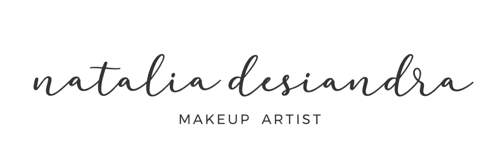
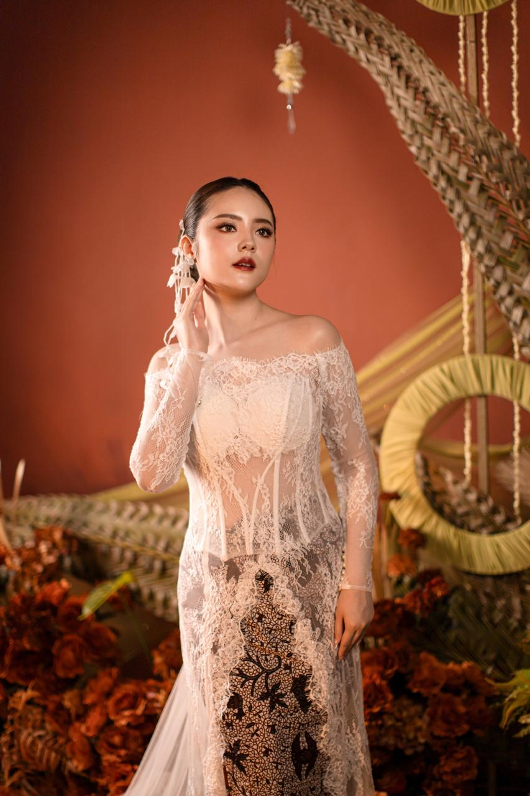
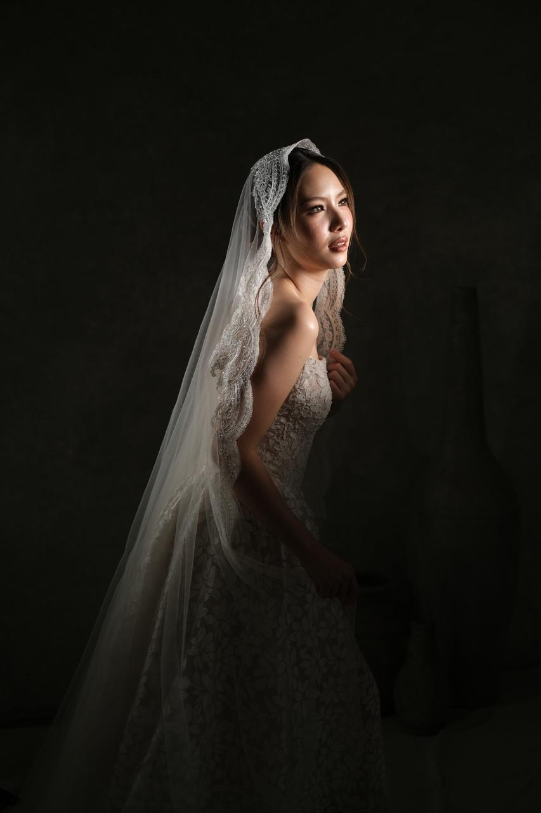
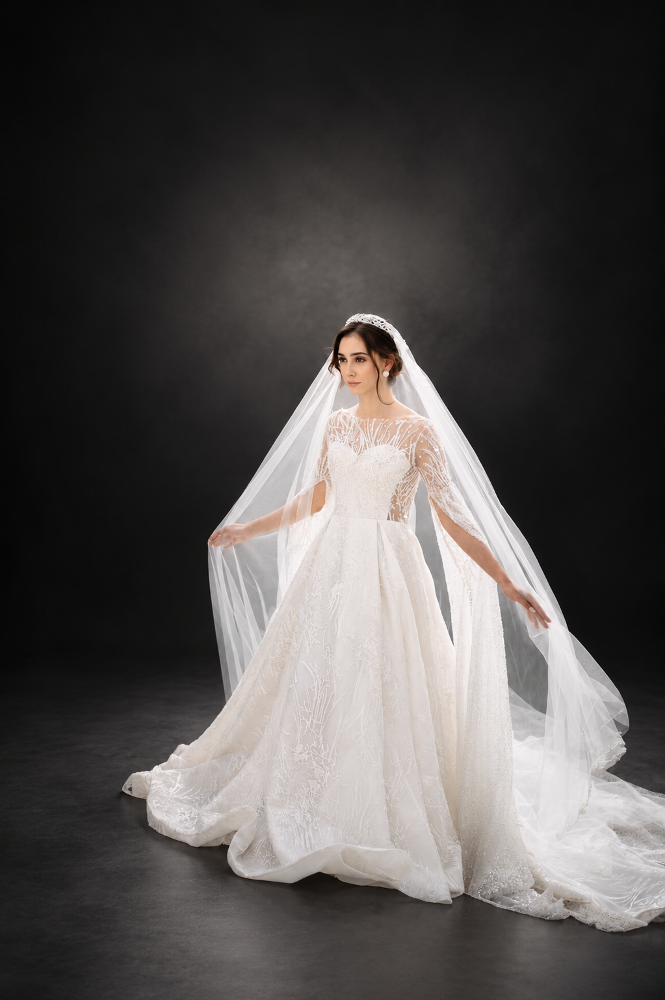
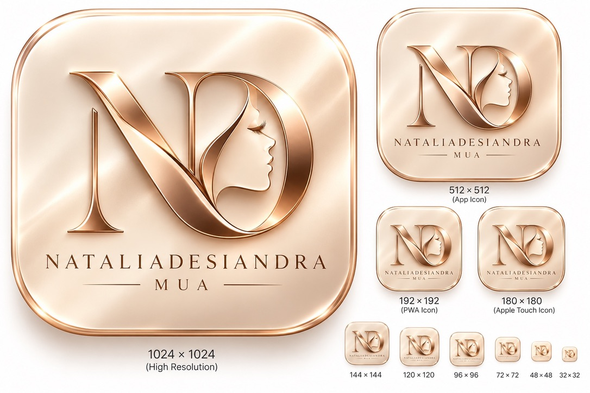
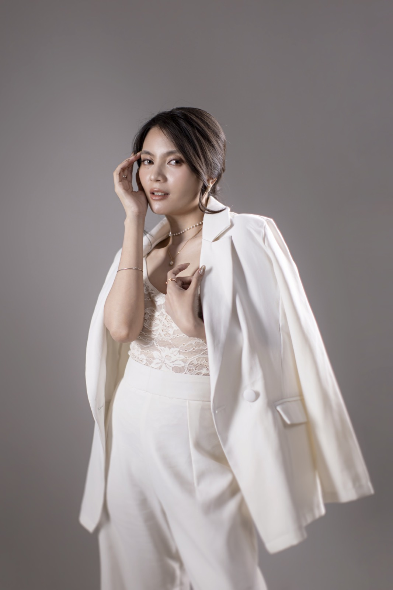
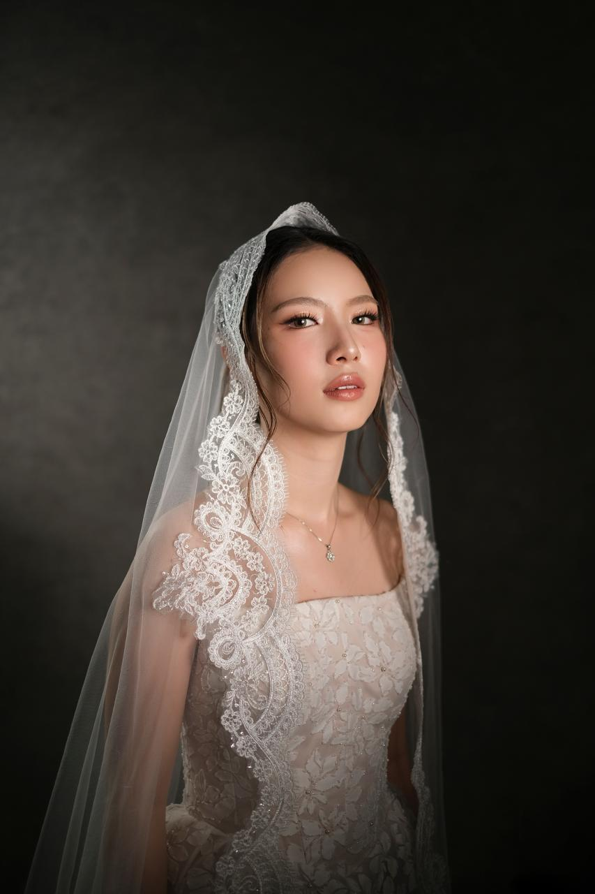

Tell me your story
Share your event date, location, and the look you’re dreaming of.





FOR THE MOMENT THAT’S ALL YOURS
Makeup that celebrates your face.
A feeling you’ll carry long after the day.
01 / THE LOOKBOOK
A closer look at the details.
A little inspiration for your day.
MORE THAN A BEAUTIFUL PHOTOGRAPH
That glow starts with feeling completely yourself. Imagine looking in the mirror and seeing your favourite features brought to life: luminous skin, thoughtful details, and a look that feels as natural as your smile. Every choice is shaped around your features, your personality, and the way you want to feel. So when the room turns to look, you can be fully in the moment—confident, radiant, and beautifully you. Long after the photographs, that is the feeling worth remembering.
Let’s create your moment ↗02 / MY PHILOSOPHY

Every bride is different. And that’s the beauty of it.
Although my work carries a signature style, no two brides should ever look the same.
I believe the art of makeup is not about recreating one look on every face, but about understanding what makes each woman uniquely beautiful.
Every face has its own features, proportions, and character. My role is not to change them to fit my aesthetic, but to understand them, work with them, and enhance what is already there.
Whether it’s a soft Korean-inspired glow, a refined Thai look, or something uniquely your own, every detail is thoughtfully tailored to you — your features, your personality, and the way you want to feel.
Because your wedding day isn’t about looking like someone else, or even looking like your makeup artist’s signature.
It’s about looking in the mirror and seeing yourself — only more radiant, more confident, and more beautiful than ever.
That is the kind of beauty I believe in. And that is the beauty I want to create for you.
With love, Natalia

THE ARTIST / NATALIA DESIANDRAA PERSONAL NOTE
I’m Natalia, a makeup artist based in Jogja and Surabaya, available to travel for your special moments.
My signature is natural beauty, a luminous glow, and effortless elegance. Inspired by Korean, Thai, Douyin, and more, each look is tailored to enhance your features and express your personal style.
With love, Natalia
Tell me about your day ↗03 / YOUR BEAUTY EXPERIENCE
Thoughtfully considered packages.
Personally tailored looks.
All prices are subject to change at any time without notice. Package inclusions and booking terms are shown above.
FROM HELLO TO YOUR BIG DAY
Share your event date, location, and the look you’re dreaming of.
We’ll discuss your features, inspiration, package, and the details of your day.
Once availability and details are agreed, the deposit specified for your selected package secures your date.
04 / LOVE, FROM THE CHAIR
Real notes from Natalia’s clients.
Tap a note to flip and see the original.
I felt listened dan hasilnya sesuai request!! ✨💯👏✨BRIDE LOVE NOTE ↗
Thank you for making me beautiful and confident on our special day!! 🥹💖
Makasih ya Cii aku puas bgt sama make up e, banyak yang puji makeup e baguss Beyond my expectationBRIDE LOVE NOTE ↗
Cici sukses selalu yaaa
thankssss cc, cantik bgtttttttGRADUATION LOVE NOTE ↗
makeupnya smpe detik ini mau foto studio sama sekali ga crackkkk!!!! 😃😃 ❤️❤️❤️❤️
padahal udh keringetan bngettttt, makasih ya cc 🫶🫶
Tap to flip · Swipe to explore
A FEW THINGS YOU MIGHT BE WONDERING
For weddings, 3–6 months ahead is recommended. For other events, aim for at least 2 weeks. Send your date through WhatsApp to check availability.
Absolutely. Your look is tailored to your features and preferences, whether you love a Korean-inspired glow, a refined Thai look, Douyin inspiration, or something uniquely your own.
The Ruby Wedding Package is available outside Yogyakarta and excludes hairdo, accommodation, transportation, and meals. For other packages outside Yogyakarta, please request a personal quote.
Signature, Diamond, and Ruby Wedding Packages include a free trial makeup session. Trial timing is arranged personally with Natalia.
First, we confirm availability and agree on your package and details. Deposit amounts and payment deadlines depend on the selected package. All deposits are non-refundable; please see the booking terms for your package.

YOUR NEXT CHAPTER STARTS HERE
One conversation. A look that’s entirely yours.
Share your date and let’s begin.
JOGJA · SURABAYA · TRAVEL